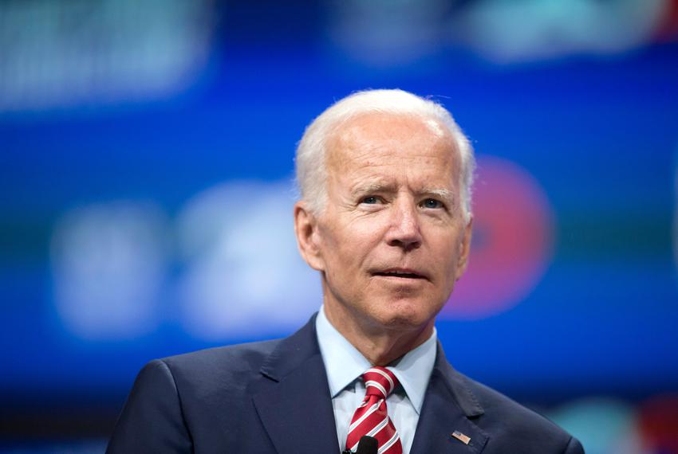
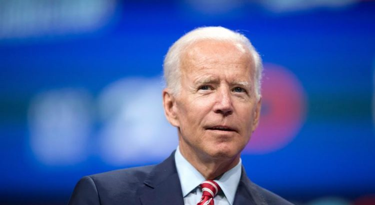
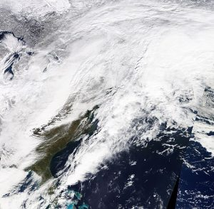

Uri — Biden to Visit Houston on Friday

The White House announced that President Joe Biden and his wife, Jill, will travel to Houston on Friday, where they are expected to meet with local leaders to discuss the ongoing recovery from last week’s winter storm.Most businesses and homes across the state were affected since many of them were left without power and clean water for days.
The President will also visit a COVID-19 health center where vaccines are being distributed.President Biden talked of the visit last week, but added that he wouldn’t want to be a disruption in the recovery process.
Over the weekend, the White House said that the President had declared a major disaster in Texas and had called upon federal agencies to offer resources.
Texas was greatly affected by the bad weather and most of the residents were forced to stay under boil water notices following the freezing temperatures.
Other residents have also been forced to have a clean-up operation due to the extensive damage caused by the heavy snowfall.
Reports indicate that the Federal Emergency Management Agency (FEMA) has shipped generators and supplies like blankets, fuel, and water in the affected areas.
Due to the disaster, the federal government has already approved emergency declarations for Texas, Louisiana, and Oklahoma.
The storm is said to have killed 29 people, a huge number of single weather-related deaths.More than seven million people suffered electricity blackouts and water disruptions.Governor Greg Abbott said that Texans should not see extremely huge energy bills because of the strain on the energy market due to the tragedy.
Analysts have said that the affected areas will take some time to recover fully.However, one week after the storm, the state has started experiencing water systems recovery.
The boil water notices have also been lifted.Residents who are faced with long-term damage will have their problems fixed since the state will organize to have plumbers fix the broken pipes.
The extreme winter weather did not spare businesses.Retailers and restaurants were shut and their employees sent home.FedEx said that the horrible weather halted operations in one of its hubs, in Memphis.
The winter storm, which brought with it freezing rain and snow, led to the temporary closure of stores belonging two giant companies in the US.
More than 500 Walmart stores and Sam’s Clubs were closed.The company revealed that its emergency operation center was closely monitoring the situation and scouting out for any possible disasters.
Amazon, on its part, was forced to temporarily close some of its facilities in eight states: Texas, Illinois, Oklahoma, Missouri, Kentucky, Indiana, and Tennessee.The giant e-commerce company said that the health and safety of its employees and customers was a top priority.
Walmart is the largest private employer in the United Sates while Amazon, an online retail giant, is the second-largest.
Share on Facebook Tweet Follow us
Posted On: 2021-02-24T00:00:00
Posted By: Juliet Norah





Content Date: 2021-02-24
Download Date: 2021-07-09
Document ID: L0C04ER4U